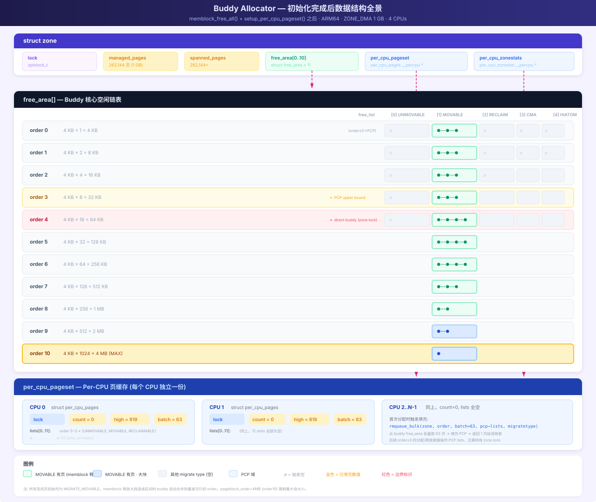

基于 Linux 6.18.1，ARM64 架构，源码路径：mm/page_alloc.c·mm/percpu.c·mm/memblock.c
| 常量 | 值 | 来源 |
|---|---|---|
PAGE_SHIFT |
12 | .config:845 |
PAGE_SIZE |
4096 (4 KB) | 1 << 12 |
ARCH_FORCE_MAX_ORDER |
10 | .config:481 |
MAX_PAGE_ORDER |
10 | mmzone.h:32 |
NR_PAGE_ORDERS |
11 | MAX_PAGE_ORDER + 1 (order 0~10) |
MAX_ORDER_NR_PAGES |
1024 (4 MB) | 1 << MAX_PAGE_ORDER |
CONFIG_NUMA |
y | .config:455 |
CONFIG_ZONE_DMA |
y | .config:1071 |
CONFIG_ZONE_DMA32 |
y | .config:1072 |
MAX_NR_ZONES |
4 | DMA, DMA32, NORMAL, MOVABLE |
MIGRATE_TYPES |
6 | UNMOVABLE, MOVABLE, RECLAIMABLE, HIGHATOMIC, CMA, ISOLATE |
CONFIG_SPARSEMEM_VMEMMAP |
y | .config:1006 |
struct free_area// include/linux/mmzone.h:138
struct free_area {
struct list_head free_list[MIGRATE_TYPES]; // 每种迁移类型一条链表
unsigned long nr_free; // 该 order 的空闲页块数
};// include/linux/mmzone.h:999
struct zone {
struct free_area free_area[NR_PAGE_ORDERS]; // NR_PAGE_ORDERS = 11 (order 0~10)
};每个 order 是完全独立的桶，不同 order 的页面不在同一条链表上。
zone->free_area[]
┌────────────────────────────────────────────────────────────────┐
│ [0] nr_free=N0 free_list[UNMOVABLE]: page ⇄ page ⇄ ... │
│ free_list[MOVABLE]: page ⇄ ... │
│ free_list[RECLAIMABLE]: ... │
│ free_list[HIGHATOMIC]: ... │
│ free_list[CMA]: ... │
│ free_list[ISOLATE]: ... │
├────────────────────────────────────────────────────────────────┤
│ [1] nr_free=N1 free_list[MOVABLE]: page ⇄ ... │
│ ... │
├────────────────────────────────────────────────────────────────┤
│ ... │
├────────────────────────────────────────────────────────────────┤
│ [9] nr_free=N9 ... │
├────────────────────────────────────────────────────────────────┤
│[10] nr_free=N10 free_list[MOVABLE]: page ⇄ page ⇄ ... │
│ ... │
└────────────────────────────────────────────────────────────────┘__add_to_free_list 函数解析// page_alloc.c:806
static inline void __add_to_free_list(struct page *page, struct zone *zone,
unsigned int order, int migratetype,
bool tail)
{
struct free_area *area = &zone->free_area[order];
int nr_pages = 1 << order;
VM_WARN_ONCE(get_pageblock_migratetype(page) != migratetype, ...);
if (tail)
list_add_tail(&page->buddy_list, &area->free_list[migratetype]);
else
list_add(&page->buddy_list, &area->free_list[migratetype]);
area->nr_free++;
if (order >= pageblock_order && !is_migrate_isolate(migratetype))
__mod_zone_page_state(zone, NR_FREE_PAGES_BLOCKS, nr_pages);
}| 行 | 代码 | 说明 |
|---|---|---|
area = &zone->free_area[order] |
按 order 定位桶 | 取 free_area 数组中对应 order 的元素 |
tail 参数 |
true → list_add_tail，false → list_add |
memblock 释放用 FPI_TO_TAIL → 插入链表尾；expand 拆分用 false → 插入链表头 |
page->buddy_list |
每个 struct page 内嵌的 list_head |
页面通过此字段串联 |
area->free_list[migratetype] |
链表头 | 同一 order、同一迁移类型的页面挂在同一链表 |
area->nr_free++ |
计数递增 | 快速获取该 order 的空闲块数，/proc/buddyinfo 读的就是这个字段 |
order >= pageblock_order |
大块统计 | 释放 order ≥ pageblock_order 的整块时，更新 NR_FREE_PAGES_BLOCKS 计数器 |
list_add vs list_add_tail 的区别list_add(&page->buddy_list, &free_list): list_add_tail(&page->buddy_list, &free_list):
插入前: head ⇄ A ⇄ B 插入前: head ⇄ A ⇄ B
插入后: head → page → A ⇄ B 插入后: head ⇄ A ⇄ B ⇄ page
↑_____________↓ ↑_________________↓
(page 放在 head 后面，下次分配优先命中) (page 放在尾部，降低被快速重新分配的概率)memblock 移交使用 FPI_TO_TAIL：4MB 大块放到链表尾，降低与 buddy 已存在的同样 4MB 块竞争，让原本就在 buddy 的空闲块优先被分配，新加入的块作为后备。
不同 order 没有横向链表直接相连，它们通过两个操作在 order 间流动：
expand() — 分配时从上拆下当请求小 order 页面但只有大 order 块时，将大块拆分，剩余部分加入低 order 链表：
// page_alloc.c:1689
static inline unsigned int expand(struct zone *zone, struct page *page,
int low, int high, int migratetype)
{
unsigned int size = 1 << high;
while (high > low) {
high--;
size >>= 1; // 每次减半
__add_to_free_list(&page[size], zone, high, migratetype, false);
set_buddy_order(&page[size], high);
}
// 返回 page，大小为 2^low
}实例：请求 order=2 (16KB)，只有 order=4 (64KB) 块：
初始: 0 ────────────────────── 15 (order=4, 64KB, 16页)
从 free_area[4] 取出
expand(page, low=2, high=4):
high=4→3: 拆出 page[8..15] → free_area[3] +1 order=3 (32KB)
high=3→2: 拆出 page[4..7] → free_area[2] +1 order=2 (16KB)
最终: page[0..3] 返回给调用者
free_area[2] 新增 page[4..7]
free_area[3] 新增 page[8..15]__free_one_page — 释放时从下合上释放页面时，检查其 buddy 是否空闲。若空闲，从低 order 链表删除 buddy，合并后升级到高 order：
// page_alloc.c:941
static inline void __free_one_page(struct page *page,
unsigned long pfn, struct zone *zone, unsigned int order, ...)
{
while (order < MAX_PAGE_ORDER) {
buddy = find_buddy_page_pfn(page, pfn, order, &buddy_pfn);
if (!buddy)
goto done_merging; // buddy 不在 → 停止合并
__del_page_from_free_list(buddy, zone, order, buddy_mt); // 从链表删除
combined_pfn = buddy_pfn & pfn;
page = page + (combined_pfn - pfn);
pfn = combined_pfn;
order++; // 升级到更高 order
}
done_merging:
set_buddy_order(page, order); // PG_buddy + order 标记
__add_to_free_list(page, zone, order, migratetype, to_tail); // 加入对应链表
}实例：依次释放 PFN 4~7 (均为 order=0)：
初始: free_area 全空
释放 pfn=4: 无伙伴 → free_area[0] +1 free_area[0] = {4}
释放 pfn=5: buddy=4 空闲 → 删4, 合并为 order=1 (pfn=4)
free_area[0] 空
free_area[1] +1 {4-5}
释放 pfn=6: 无伙伴 → free_area[0] +1 free_area[0] = {6}
释放 pfn=7: buddy=6 空闲 → 删6, 合并为 order=1 (pfn=6)
buddy=4 (order=1) 也空闲 → 删4-5, 合并为 order=2 (pfn=4)
free_area[0] 空
free_area[1] 空
free_area[2] +1 {4-7} expand() (从上拆)
──────────────────────→
order=10 ←→ order=9 ←→ ... ←→ order=0
←──────────────────────
__free_one_page (从下合)memblock_free_all() [mm/memblock.c:2341]
├─ free_unused_memmap() [ARM64: 空函数，SPARSEMEM_VMEMMAP=y]
├─ reset_all_zones_managed_pages() [全 zone managed_pages 归零]
├─ memblock_clear_kho_scratch_only()
└─ free_low_memory_core_early() [mm/memblock.c:2291]
├─ memblock_clear_hotplug(0, -1) [清除所有 MEMBLOCK_HOTPLUG 标志]
├─ memmap_init_reserved_pages() [标记 reserved 页为 PageReserved]
└─ for_each_free_mem_range()
└─ __free_memory_core(start, end) [mm/memblock.c:2225]
└─ __free_pages_memory() [最大对齐拆分]
└─ memblock_free_pages()
└─ __free_pages_core(page, order, MEMINIT_EARLY)
├─ __ClearPageReserved × n [清除 reserved 标志]
├─ set_page_count(p, 0) × n [refcount 1→0]
├─ atomic_long_add(managed_pages)
└─ __free_pages_ok(page, order, FPI_TO_TAIL)
└─ free_one_page(zone, page, pfn, order)
└─ split_large_buddy(zone, page, pfn, order)
└─ __free_one_page() ★ 核心交接点 ★
├─ buddy 合并循环
├─ set_buddy_order()
└─ __add_to_free_list() ← 加入 buddy 链表最终交接点：free_one_page 中的 add_to_free_list —— 页面加入 zone->free_area[order].free_list[migratetype]，从此由伙伴分配器接管。
/proc/buddyinfo 与 /proc/pagetypeinfo 解读__add_to_free_list(&page, zone, order, migratetype, ...)
│ │ │ │
│ │ │ └── pagetypeinfo 的列 (迁移类型)
│ │ └── buddyinfo 的 order 列
│ └── "Node X, zone Y"
└── 写入 page->buddy_list ⇄ free_area[order].free_list[migratetype]以 order=9 为例，pagetypeinfo 显示：
Order: 9
Unmovable: 1
Movable: 1
Reclaimable: 1
CMA: 1
HighAtomic: 0
Isolate: 0对应的 free_area[9] 结构：
free_area[9]
┌──────────────────────────────────────────────┐
│ free_list[UNMOVABLE]: ┌─→ page_A ←─┐ │
│ └────────────┘ │
│ free_list[MOVABLE]: ┌─→ page_B ←─┐ │
│ └────────────┘ │
│ free_list[RECLAIMABLE]: ┌─→ page_C ←─┐ │
│ └────────────┘ │
│ free_list[CMA]: ┌─→ page_D ←─┐ │
│ └────────────┘ │
│ free_list[HIGHATOMIC]: (empty) │
│ free_list[ISOLATE]: (empty) │
│ │
│ nr_free = 4 │
└──────────────────────────────────────────────┘
每个 page_X 都是 2^9 = 512 页连续物理内存 (2MB)Number of blocks type 含义Number of blocks type Unmovable Movable Reclaimable HighAtomic CMA Isolate
Node 0, zone DMA 12 476 8 0 16 0这是 pageblock 级别的迁移类型统计，每个 pageblock (此处 512 页 = 2MB) 拥有一个主导迁移类型。12 + 476 + 8 + 16 = 512 个 pageblock，zone 总大小 = 512 × 2MB = 1GB。
// include/linux/gfp.h:20
#define GFP_MOVABLE_MASK (__GFP_RECLAIMABLE | __GFP_MOVABLE)
#define GFP_MOVABLE_SHIFT 3
static inline int gfp_migratetype(const gfp_t gfp_flags)
{
if (unlikely(page_group_by_mobility_disabled))
return MIGRATE_UNMOVABLE;
return (gfp_flags & GFP_MOVABLE_MASK) >> GFP_MOVABLE_SHIFT;
}__GFP_MOVABLE (bit 3) |
__GFP_RECLAIMABLE (bit 4) |
结果 | 迁移类型 |
|---|---|---|---|
| 0 | 0 | 0b00 >> 3 = 0 |
MIGRATE_UNMOVABLE |
| 1 | 0 | 0b01 >> 3 = 1 |
MIGRATE_MOVABLE |
| 0 | 1 | 0b10 >> 3 = 2 |
MIGRATE_RECLAIMABLE |
| 1 | 1 | 0b11 >> 3 = 3 |
MIGRATE_HIGHATOMIC |
编译时一致性检查：
BUILD_BUG_ON((___GFP_MOVABLE >> 3) != MIGRATE_MOVABLE); // 1 == 1 ✓
BUILD_BUG_ON((___GFP_RECLAIMABLE >> 3) != MIGRATE_RECLAIMABLE); // 2 == 2 ✓
BUILD_BUG_ON(((___GFP_MOVABLE | ___GFP_RECLAIMABLE) >> 3) // 3 == 3 ✓
!= MIGRATE_HIGHATOMIC);| 项 | 说明 |
|---|---|
| GFP 标志 | 无 GFP_MOVABLE 也无 GFP_RECLAIMABLE |
| 典型 GFP | GFP_KERNEL, GFP_ATOMIC, GFP_DMA |
| 分配来源 | kmalloc/slab、vmalloc、驱动 DMA 缓冲区 |
| 能否迁移 | ❌ 不可，内存碎片化的主要来源 |
| 项 | 说明 |
|---|---|
| GFP 标志 | __GFP_MOVABLE 置位 |
| 典型 GFP | GFP_HIGHUSER, GFP_USER |
| 分配来源 | 用户态匿名页、页缓存 |
| 能否迁移 | ✅ 可通过 page migration / compaction 迁移 |
| 初始状态 | 所有 pageblock 启动时默认 MIGRATE_MOVABLE |
// mm/mm_init.c:959
memmap_init_range(..., MIGRATE_MOVABLE, false);
// 注释: "Usually, we want to mark the pageblock MIGRATE_MOVABLE,
// such that unmovable allocations won't be scattered
// all over the place during system boot."| 项 | 说明 |
|---|---|
| GFP 标志 | __GFP_RECLAIMABLE 置位 |
| 分配来源 | 可收缩 slab：dentry cache、inode cache（SLAB_RECLAIM_ACCOUNT） |
| 能否迁移 | 不可直接迁移，通过 shrink_slab() 回收后重建 |
| 项 | 说明 | |
|---|---|---|
| GFP 标志 | `__GFP_MOVABLE | __GFP_RECLAIMABLE` 同时置位 |
| 来源 | 从其他类型主动借调，为 GFP_ATOMIC 高阶分配预留 |
|
| 典型场景 | 网络驱动需要 order-1 以上连续内存时的 fallback |
| 项 | 说明 |
|---|---|
| 来源 | 不通过 GFP 标志，在 pageblock 级别设置 |
| 设置方式 | Device Tree linux,cma / 命令行 cma=256M / __free_pageblock_cma() |
| 用途 | DMA 大块连续内存、显存共享 |
| 能否分配 unmovable | ❌ is_migrate_cma() 阻止 unmovable 落入 CMA |
| 项 | 说明 |
|---|---|
| 来源 | set_pageblock_isolate() — 内存热插拔 / compaction 隔离 |
| 能否分配 | ❌ 完全不可分配，所有 allocator 跳过 |
/proc/pagetypeinfo 只显示 CMA 的空闲页数，无法直接看出谁在使用已分配的 CMA 内存。有两种追踪方式：
方式一：ftrace tracepoint（无需重编内核）
ls /sys/kernel/debug/tracing/events/cma/
# cma_alloc_start cma_alloc_finish cma_release
# 开启跟踪
echo 1 > /sys/kernel/debug/tracing/events/cma/cma_alloc_start/enable
echo 1 > /sys/kernel/debug/tracing/events/cma/cma_alloc_finish/enable
echo 1 > /sys/kernel/debug/tracing/events/cma/cma_release/enable
# 开启调用栈（可选）
echo stacktrace > /sys/kernel/debug/tracing/events/cma/cma_alloc_finish/trigger
# 监控输出
cat /sys/kernel/debug/tracing/trace_pipe输出示例：
cma_alloc_start: name=cma count=4 align=0
cma_alloc_finish: name=cma pfn=0x88000 count=4
=> cma_alloc
=> dma_alloc_contiguous
=> hns3_dma_init ← 使用者：hns3 网卡驱动方式二：CMA debugfs（需 CONFIG_CMA_DEBUGFS=y）
# 本例配置中未开启（.config:1062: # CONFIG_CMA_DEBUGFS is not set）
# 若已开启，可查看：
cat /sys/kernel/debug/cma/cma/count # 当前已分配页数
cat /sys/kernel/debug/cma/cma/alloc # 累计分配次数
cat /sys/kernel/debug/cma/cma/used # 已使用位图CMA 分配的两种调用路径：
| 路径 | 调用链 | 场景 |
|---|---|---|
| 驱动直调 | dma_alloc_contiguous() → cma_alloc() → alloc_contig_range() |
驱动申请 DMA 大块连续内存 |
| MOVABLE fallback | alloc_pages(GFP_USER) → __rmqueue_cma_fallback() |
MOVABLE 链表空时从 CMA 借页（触发条件：NR_FREE_CMA_PAGES > NR_FREE_PAGES/2） |
迁移类型在两个层面存在：
| 层面 | 粒度 | 存储 | 读取 |
|---|---|---|---|
| Pageblock | 512 页（2MB） | pageblock 位图 | get_pageblock_migratetype() |
| 单页/块 | 1 页 ~ 1024 页 | 所在的 free_list[] |
由链表位置隐式决定 |
pageblock_order（本次=9）以下，单页 migratetype 可与 pageblock 不同；pageblock_order 以上必须一致。__add_to_free_list 中有断言检查：
// page_alloc.c:806
VM_WARN_ONCE(get_pageblock_migratetype(page) != migratetype, ...);这是 UNMOVABLE / RECLAIMABLE / HIGHATOMIC 类型 首次出现的唯一途径。
时序说明：窃取发生在memblock_free_all()完成之后的运行时分配过程，而非 buddy 初始化阶段。此时 buddy 已就绪，所有 pageblock 均为 MOVABLE，alloc_pages()可用但kmalloc()尚未初始化（slab 需要额外的初始化步骤）。UNMOVABLE/RECLAIMABLE 是通过alloc_pages(GFP_KERNEL)等调用反应式产生的——没有预先"判定"，只有按需"窃取"。
// page_alloc.c:2431 — 分配优先级逐级回退
enum rmqueue_mode {
RMQUEUE_NORMAL, // ① 优先从本类型 free_list 取
RMQUEUE_CMA, // ② 从 CMA 区域取（仅 ALLOC_CMA 标志时）
RMQUEUE_CLAIM, // ③ 窃取整个 pageblock
RMQUEUE_STEAL, // ④ 窃取单个页（不改变 pageblock 类型）
};分配流程：
__rmqueue(zone, order, MIGRATE_UNMOVABLE, ...)
│
├─ RMQUEUE_NORMAL: __rmqueue_smallest(UNMOVABLE)
│ └─ UNMOVABLE 链表空 → fallthrough
├─ RMQUEUE_CMA: 不适用（非 ALLOC_CMA）→ fallthrough
├─ RMQUEUE_CLAIM: __rmqueue_claim(zone, order, UNMOVABLE) ★ 尝试窃取整块
│ └─ 成功 → 返回 page, mode 切回 RMQUEUE_NORMAL
│ └─ 失败 → fallthrough
└─ RMQUEUE_STEAL: __rmqueue_steal(zone, order, UNMOVABLE) ★ 窃取单页
└─ 成功 → 返回 page, mode 保持 RMQUEUE_STEALshould_try_claim_block — 是否尝试窃取的决策规则// page_alloc.c:2203
static bool should_try_claim_block(unsigned int order, int start_mt)
{
// 规则1: order ≥ pageblock_order → 总是尝试（释放的块就是完整 pageblock）
if (order >= pageblock_order)
return true;
// 规则2: order ≥ 半个 pageblock → 总是尝试（大块碎片化严重）
if (order >= pageblock_order / 2)
return true;
// 规则3: UNMOVABLE / RECLAIMABLE → 总是尝试
// 原因: 它们落入 MOVABLE pageblock 会造成永久碎片化
if (start_mt == MIGRATE_RECLAIMABLE || start_mt == MIGRATE_UNMOVABLE)
return true;
// 规则4: MOVABLE 小分配 → 不尝试窃取整块
// 原因: MOVABLE 可被 compaction 迁移，临时混入不会永久碎片化
return false;
}| 请求类型 | order | 是否尝试 claim | 原因 |
|---|---|---|---|
| MOVABLE | 0~4 | ❌ 不尝试 | 小页不影响，compaction 可修复 |
| MOVABLE | 5~8 | ✅ 尝试 | order ≥ pageblock_order/2 |
| MOVABLE | 9~10 | ✅ 尝试 | order ≥ pageblock_order |
| UNMOVABLE | 任意 | ✅ 总是 | 防止永久碎片化 |
| RECLAIMABLE | 任意 | ✅ 总是 | 防止永久碎片化 |
__rmqueue_claim — 寻找可以窃取的目标// page_alloc.c:2354
static struct page *
__rmqueue_claim(struct zone *zone, int order, int start_migratetype, ...)
{
// 从最大 order 开始往下找，优先窃取大块
for (current_order = MAX_PAGE_ORDER; current_order >= min_order;
--current_order) {
// 从 fallback 表中找有空闲的目标类型
fallback_mt = find_suitable_fallback(area, current_order,
start_migratetype, true);
if (fallback_mt == -1) // 该 order 所有 fallback 类型都空
continue;
if (fallback_mt == -2) // order 太小不值得窃取整块
break;
page = get_page_from_free_area(area, fallback_mt); // 取一个块
page = try_to_claim_block(zone, page, current_order, order,
start_migratetype, fallback_mt, ...);
if (page)
return page; // 窃取成功
}
return NULL;
}关键：从高 order 往下找，因为大块携带着更多空闲页，更容易满足"半个 pageblock"的窃取条件。
try_to_claim_block — 窃取判断核心// page_alloc.c:2278
static struct page *
try_to_claim_block(struct zone *zone, struct page *page,
int current_order, int order, int start_type,
int block_type, unsigned int alloc_flags)
{
int free_pages, movable_pages, alike_pages;
// === 路径 A: 被取出的块 ≥ 整个 pageblock ===
if (current_order >= pageblock_order) {
del_page_from_free_list(page, zone, current_order, block_type);
change_pageblock_range(page, current_order, start_type); // 改位图
nr_added = expand(zone, page, order, current_order, start_type);
return page; // 无条件窃取成功
}
// === 路径 B: 被取出的块 < pageblock → 统计 pageblock 内部状态 ===
prep_move_freepages_block(zone, page, &start_pfn,
&free_pages, &movable_pages);
// free_pages: pageblock 内空闲页数
// movable_pages: pageblock 内可迁移页数（LRU 或 movable_ops）
// === 计算 "兼容" 页数 ===
if (start_type == MIGRATE_MOVABLE) {
alike_pages = movable_pages; // MOVABLE → 只算可迁移页
} else {
if (block_type == MIGRATE_MOVABLE)
// UNMOVABLE 回退到 MOVABLE pageblock:
// 非空闲非 MOVABLE 的页 = 兼容（内核已分配的 unmovable 页）
alike_pages = pageblock_nr_pages - (free_pages + movable_pages);
else
// UNMOVABLE 回退到 RECLAIMABLE 或反之:
// 保守：不认为任何非空闲页是兼容的
alike_pages = 0;
}
// === 窃取条件: 空闲 + 兼容 ≥ 半个 pageblock ===
if (free_pages + alike_pages >= (1 << (pageblock_order-1))) {
__move_freepages_block(zone, start_pfn, block_type, start_type);
// ↑ 将 pageblock 内所有空闲页从 free_list[block_type] 移到 free_list[start_type]
set_pageblock_migratetype(pfn_to_page(start_pfn), start_type);
// ↑ 改写 pageblock 位图
return __rmqueue_smallest(zone, order, start_type);
}
return NULL; // 条件不满足，窃取失败 → 交给 __rmqueue_steal 处理
}重要前提：以下发生在 memblock_free_all() 完成之后。此时 buddy 已初始化完毕，所有空闲页均为 MIGRATE_MOVABLE，但 kmalloc 尚不可用（slab 还未初始化）。UNMOVABLE 是由 alloc_pages(GFP_KERNEL) 触发的。
以 首次 alloc_pages(GFP_KERNEL, 0) 触发 UNMOVABLE pageblock 的产生为例：
初始状态:
所有 pageblock 位图: MIGRATE_MOVABLE (=1)
free_area[0~10].free_list[MOVABLE]: 包含 zone 内所有空闲页
free_area[0~10].free_list[UNMOVABLE]: 全空 —— 没有任何 UNMOVABLE 页
分配请求: alloc_pages(GFP_KERNEL, 0)
→ gfp_migratetype(GFP_KERNEL) = MIGRATE_UNMOVABLE (=0)
→ 这是 buddy 初始化后首次 UNMOVABLE 分配Step 1: __rmqueue(zone, 0, UNMOVABLE, ...) → RMQUEUE_NORMAL
__rmqueue_smallest(zone, 0, UNMOVABLE)
→ free_area[0].free_list[UNMOVABLE] = 空
→ free_area[1].free_list[UNMOVABLE] = 空
→ ...
→ free_area[10].free_list[UNMOVABLE] = 空
→ 返回 NULL，fallthrough 到 RMQUEUE_CLAIMStep 2: __rmqueue_claim(zone, 0, UNMOVABLE)
current_order=10:
find_suitable_fallback(area[10], UNMOVABLE, claimable=true)
→ should_try_claim_block(10, UNMOVABLE) → true (规则1)
→ fallbacks[UNMOVABLE][0] = RECLAIMABLE → free_area[10].free_list[RECLAIMABLE] = 空
→ fallbacks[UNMOVABLE][1] = MOVABLE → free_area[10].free_list[MOVABLE] = 有块!
→ 返回 MOVABLE
get_page_from_free_area(area[10], MOVABLE) → page (一个 4MB MOVABLE 块)
→ try_to_claim_block(zone, page, current_order=10, order=0,
start_type=UNMOVABLE, block_type=MOVABLE)Step 3: try_to_claim_block 路径 A（current_order=10 ≥ pageblock_order=9）：
current_order=10 → 块跨 2 个 pageblock: P_block0 和 P_block1
del_page_from_free_list(page, zone, 10, MOVABLE)
→ 从 free_area[10].free_list[MOVABLE] 删除该 4MB 块
change_pageblock_range(page, current_order=10, start_type=UNMOVABLE)
→ set_pageblock_migratetype(P_block0, UNMOVABLE) 位图[block0] = 0
→ set_pageblock_migratetype(P_block1, UNMOVABLE) 位图[block1] = 0
expand(zone, page, low=0, high=10, UNMOVABLE):
→ 拆出 order=9,8,...,1 的块，全放入 free_list[UNMOVABLE]
→ 返回 order=0 给调用者
account_freepages(zone, nr_added=1023, UNMOVABLE) // 1024-1=1023 页进入 UNMOVABLE 统计
/proc/pagetypeinfo 变化:
Number of blocks type Unmovable: 0 → 2
Number of blocks type Movable: 496 → 494Step 4: 单页窃取示例（当整块窃取失败时）
请求: GFP_USER → MIGRATE_MOVABLE, order=0
MOVABLE 链表空 → fallback to UNMOVABLE
__rmqueue_claim 尝试窃取失败（alike_pages 不足一半）
→ fallthrough to RMQUEUE_STEAL
__rmqueue_steal(zone, 0, MOVABLE):
→ 找到 free_area[2].free_list[UNMOVABLE] 有空闲 order=2 块
→ page_del_and_expand(zone, page, low=0, high=2, UNMOVABLE)
→ 不改变 pageblock 位图！
→ 拆出 order=1,0 放入 free_list[UNMOVABLE]（仍是 UNMOVABLE）
→ 返回 order=0 给 MOVABLE 请求者
结果: MOVABLE 分配从 UNMOVABLE pageblock 拿走一页，
pageblock 仍为 UNMOVABLE，不产生新类型current_order ≥ pageblock_order |
整块窃取（half-page） | 单页窃取（steal） | |
|---|---|---|---|
| 触发函数 | __rmqueue_claim 路径A |
__rmqueue_claim 路径B |
__rmqueue_steal |
| 条件 | 取出的块 ≥ 完整 pageblock | free + alike ≥ 半 pageblock |
claim 失败后的 fallback |
| pageblock 位图 | ✅ 改变 | ✅ 改变 | ❌ 不变 |
| 空闲页迁移 | expand() 全部放入新类型 |
__move_freepages_block 迁移 |
page_del_and_expand 只有拆出的子块 |
| 产生新类型 | ✅ | ✅ | ❌ |
| 碎片化风险 | 无 | 低 | 高 — 跨类型混用 pageblock |
| 迁移类型 | 值 | 来源 | 能否移动 | 链表位置 | |
|---|---|---|---|---|---|
| UNMOVABLE | 0 | GFP_KERNEL，无特殊标志 |
❌ | free_list[0] |
|
| MOVABLE | 1 | __GFP_MOVABLE + 启动默认 |
✅ | free_list[1] |
|
| RECLAIMABLE | 2 | __GFP_RECLAIMABLE |
可回收 | free_list[2] |
|
| HIGHATOMIC | 3 | `__GFP_MOVABLE\ | RECLAIMABLE` 或借调 | ✅ | free_list[3] |
| CMA | 4 | DT linux,cma / cma= 命令行 |
✅ | free_list[4] |
|
| ISOLATE | 5 | set_pageblock_isolate() |
— | free_list[5]（始终空） |
核心问题：memblock 只记录物理区间，没有任何 migratetype 概念。免费页释放到 buddy 时，迁移类型从哪里来？
答案：迁移类型不来自 memblock，而是来自 pageblock 位图。该位图在 memblock_free_all() 之前已由 zone 初始化写好。
start_kernel()
→ mm_init()
→ paging_init()
→ free_area_init()
→ free_area_init_core()
→ memmap_init_range(..., MIGRATE_MOVABLE) ★ 步骤1: 写位图
→ init_pageblock_migratetype(page, MIGRATE_MOVABLE)
→ __set_pfnblock_flags_mask(...)
→ mem_init()
→ memblock_free_all() ★ 步骤2: 读位图释放
→ ... → split_large_buddy()
→ mt = get_pfnblock_migratetype(page, pfn) // 读回 MOVABLE
→ __add_to_free_list(..., MIGRATE_MOVABLE) // 放入 free_list[1]写入侧（zone init，先执行）：
// mm/mm_init.c:936
init_pageblock_migratetype(page, MIGRATE_MOVABLE, false);
// page_alloc.c:551
void __meminit init_pageblock_migratetype(struct page *page,
enum migratetype migratetype, ...)
{
flags = migratetype; // MIGRATE_MOVABLE = 1
__set_pfnblock_flags_mask(page, page_to_pfn(page), flags,
MIGRATETYPE_AND_ISO_MASK); // 写入 pageblock 位图
}读取侧（memblock 释放，后执行）：
// page_alloc.c:1497 split_large_buddy()
int mt = get_pfnblock_migratetype(page, pfn); // 从位图读回 MIGRATE_MOVABLE
// page_alloc.c:444
get_pfnblock_migratetype(const struct page *page, unsigned long pfn)
{
flags = __get_pfnblock_flags_mask(page, pfn, MIGRATETYPE_AND_ISO_MASK);
return flags & MIGRATETYPE_MASK; // → 1 = MIGRATE_MOVABLE
}memblock 中的空闲区间:
[0x40000000, 0x80000000) 2GB, nid=0 ← 只有物理地址 + nid，无类型概念
↓ 步骤1: memmap_init_range() 已预先写入 pageblock 位图
pageblock 位图 (以 2MB 为粒度):
┌──────┬──────┬──────┬─────┬──────┐
│ 01 │ 01 │ 01 │ ... │ 01 │ ← 全是 MIGRATE_MOVABLE=1
└──────┴──────┴──────┴─────┴──────┘
↓ 步骤2: memblock_free_all() 读位图释放
buddy 链表:
free_area[0~10].free_list[MOVABLE]:
page ⇄ page ⇄ page ⇄ ... ← 所有 memblock 空闲页以 MOVABLE 身份入列
/proc/pagetypeinfo:
Number of blocks type Movable: 476 (默认)
Number of blocks type CMA: 16 (由 init_cma_reserved_pageblock 单独改写)
Number of blocks type Unmovable: 0 ← 内核尚未分配，全为 MOVABLECMA pageblock 不走默认 MOVABLE，由 CMA 子系统单独改写：
// mm/mm_init.c:2237
void __init init_cma_reserved_pageblock(struct page *page)
{
// ... 清除 reserved 标志、重置 refcount ...
init_pageblock_migratetype(page, MIGRATE_CMA, false); // 写 CMA 到位图
__free_pages(page, pageblock_order); // 释放到 buddy
}memblock 不携带类型。迁移类型由 memmap_init_range() 在 zone 初始化时预写入 pageblock 位图（默认全为 MIGRATE_MOVABLE），memblock_free_all() 释放时通过 get_pfnblock_migratetype() 回读该位图，再交给 __add_to_free_list() 放入对应的 free_list[]。CMA 区域由 CMA 子系统在 pageblock 位图中单独改写。
PCP 是 buddy 分配器的每 CPU 页缓存，用于减少 zone->lock 竞争。初始化分为两个阶段：
阶段一：Boot Pageset（zone 初始化期间，先于 memblock_free_all）
// mm/mm_init.c:1433 — free_area_init_core() 中调用
zone_pcp_init(zone);
// page_alloc.c:6139
__meminit void zone_pcp_init(struct zone *zone)
{
zone->per_cpu_pageset = &boot_pageset; // 指向静态 boot pageset
zone->per_cpu_zonestats = &boot_zonestats;
zone->pageset_high_min = BOOT_PAGESET_HIGH; // = 0
zone->pageset_high_max = BOOT_PAGESET_HIGH; // = 0
zone->pageset_batch = BOOT_PAGESET_BATCH; // = 1
}boot_pageset 是所有 zone 共享的静态 per-CPU 变量，在 build_all_zonelists_init() 中初始化：
// page_alloc.c:5786
for_each_possible_cpu(cpu)
per_cpu_pages_init(&per_cpu(boot_pageset, cpu), ...);boot pageset 参数：
| 参数 | 值 | 效果 |
|---|---|---|
high |
0 | 不做缓存，每次分配/释放直接穿透到 buddy |
batch |
1 | 每次从 buddy 只取 1 页 |
| 存储 | DEFINE_PER_CPU 静态 |
所有 zone 共享同一套 |
为什么 high=0？ percpu 动态分配器此时尚未就绪，无法分配真正的 per-CPU pageset。boot pageset 只是占位符，确保 memblock_free_all() 之后 buddy 立即可用，但不做任何缓存——每个 alloc/free 都穿透到 zone->lock 保护的 buddy 核心路径。
阶段二：Real Per-CPU Pageset（percpu 分配器就绪后）
// page_alloc.c:6110
void __init setup_per_cpu_pageset(void)
{
for_each_populated_zone(zone)
setup_zone_pageset(zone);
}
// page_alloc.c:6045
void __meminit setup_zone_pageset(struct zone *zone)
{
zone->per_cpu_pageset = alloc_percpu(struct per_cpu_pages); // 动态分配
zone->per_cpu_zonestats = alloc_percpu(struct per_cpu_zonestat);
for_each_possible_cpu(cpu) {
pcp = per_cpu_ptr(zone->per_cpu_pageset, cpu);
per_cpu_pages_init(pcp, pzstats); // 清零 + 初始化 lists[]
}
zone_set_pageset_high_and_batch(zone, 0); // 根据 zone 大小计算 batch/high
}alloc_percpu 此时从哪里分配内存？
此时 alloc_percpu() 调用，内部会发 pcpu_alloc_noprof()。这个阶段 buddy allocator 虽然已经可用（memblock_free_all() 已完成），但 alloc_percpu 并不经过 buddy，而是直接从 percpu 第一块（first chunk）的预填充区域分配：
alloc_percpu(type)
→ __alloc_percpu(sizeof, __alignof__) // reserved=false, GFP_KERNEL
→ pcpu_alloc_noprof(size, align, false, GFP_KERNEL)
→ 在 pcpu_first_chunk 中找空闲空间
→ 检查是否需要填充页面（pcpu_populate_chunk）→ 不需要！
→ 直接返回虚拟地址关键：第一块的所有页面在 pcpu_setup_first_chunk() 中就已经全部填充完毕，见 mm/percpu.c：
// pcpu_alloc_first_chunk(), mm/percpu.c:1390
chunk->immutable = true;
bitmap_fill(chunk->populated, chunk->nr_pages); // 全部标记为已填充因此在 pcpu_alloc_noprof() 中：
// mm/percpu.c:1865-1872
for_each_clear_bitrange_from(rs, re, chunk->populated, page_end) {
// ↑ 由于 populated 位图全是 1，这个循环根本不会进入
ret = pcpu_populate_chunk(chunk, rs, re, pcpu_gfp); // ← 不会被调用
}pcpu_populate_chunk() 才是真正会调用 buddy allocator（alloc_pages_node()）的路径，但第一块分配时它被跳过了。alloc_percpu 此时只做位图级别的预留，物理页面早在启动早期由 memblock 分配并映射好了。
物理内存 vs 虚拟地址空间
这里容易产生一个疑问：memblock 管理的是物理内存，但 percpu 变量是通过虚拟地址访问的，二者如何统一？取决于第一块的模式：
| 模式 | 物理内存 | 虚拟地址空间 | 页表映射 |
|---|---|---|---|
| embed（默认，ARM64 等） | memblock_alloc |
内核线性映射（direct map），无需额外映射 | 复用线性映射已有页表 |
| page（fallback，32-bit NUMA） | memblock_alloc |
vm_area_register_early() 在 vmalloc 区预留 |
手动 pcpu_populate_pte() + __pcpu_map_pages() |
embed 模式（pcpu_embed_first_chunk()）：percpu 区域「寄生」在内核的线性映射上。memblock 分配的物理页面本身就位于内核线性映射范围，pcpu_fc_alloc() 返回的 ptr 即是可直接访问的虚拟地址，不需要额外建立页表。注释中明确写道：
"it is allocated by calling pcpu_fc_alloc and used as-is without being mapped into vmalloc area. This enables the first chunk to piggy back on the linear physical mapping."
page 模式（pcpu_page_first_chunk()）：先通过 vm_area_register_early() 在 vmalloc 区域预留虚拟地址空间，再将 memblock 分配的物理页逐页建立 PTE 映射进去。
无论哪种模式，物理页都来自 memblock，虚拟地址来自内核的映射机制。buddy allocator 全程不参与。
zone_set_pageset_high_and_batch 根据 zone 大小动态计算：
batch = max(1, zone_batchsize(zone));
// zone_batchsize ≈ zone_managed_pages(zone) / 1024
high = max(6 * batch, zone_highsize(zone, batch, ...));
// high ≈ min(6 * batch, zone_managed_pages(zone) / 4)// include/linux/mmzone.h:744
struct per_cpu_pages {
spinlock_t lock;
int count; // 当前缓存的页数
int high; // 高水位，超过则批量回收到 buddy
int batch; // 批量操作粒度
struct list_head lists[NR_PCP_LISTS]; // 链表数组
};NR_PCP_LISTS（本次配置）：
NR_LOWORDER_PCP_LISTS = MIGRATE_PCPTYPES × (PAGE_ALLOC_COSTLY_ORDER + 1)
= 3 × 4 = 12
lists[0]: UNMOVABLE, order=0 lists[4]: UNMOVABLE, order=2
lists[1]: MOVABLE, order=0 lists[5]: MOVABLE, order=2
lists[2]: RECLAIMABLE, order=0 lists[6]: RECLAIMABLE, order=2
lists[3]: UNMOVABLE, order=1 ...
lists[4]: MOVABLE, order=1 lists[11]: RECLAIMABLE, order=3// page_alloc.c:691
static inline bool pcp_allowed_order(unsigned int order)
{
if (order <= PAGE_ALLOC_COSTLY_ORDER) // order ≤ 3 (≤ 32KB)
return true;
return false;
}order ≥ 4 的页面直接走 buddy 核心路径（free_one_page() / __rmqueue()），不经 PCP。
free 路径: alloc 路径:
───────── ──────────
free_page(page) alloc_pages(GFP_KERNEL, 0)
→ __free_frozen_pages() → __rmqueue_pcplist()
order ≤ 3? ✓ PCP 有页? ✓
→ list_add(page, pcp->lists[]) → 直接从 PCP 返回 (无锁)
→ pcp->count++ → pcp->count--
→ pcp->count > high?
→ 回收 batch 页到 buddy PCP 有页? ✗
↓ → rmqueue_bulk(zone,order,
__free_one_page() batch,list,migratetype)
↓ ↓
__add_to_free_list() __rmqueue() × batch
↓
从 buddy free_list 取 batch 页
加入 PCP lists[]
返回 1 页给调用者start_kernel()
→ mm_init()
→ build_all_zonelists_init()
→ per_cpu_pages_init(&boot_pageset) ← boot pageset 清零
→ paging_init()
→ free_area_init()
→ zone_pcp_init(zone) ← ① 指向 boot_pageset
→ mem_init()
→ memblock_free_all() ← buddy 全 MOVABLE
(PCP: boot pageset, high=0, 无缓存)
→ kmem_cache_init() ← 首次 alloc_pages(GFP_KERNEL)
(仍用 boot pageset)
→ setup_per_cpu_pageset() ← ② 分配真正的 per-CPU pageset
→ alloc_percpu(struct per_cpu_pages)
→ zone_set_pageset_high_and_batch()
(此后 PCP 缓存生效)batch 和 high 的计算规则batch 计算// page_alloc.c:5853
static int zone_batchsize(struct zone *zone)
{
// 步骤1: 取 zone 大小的 0.1% 和 1MB 的较小值
batch = min(zone_managed_pages(zone) >> 10, // zone_pages / 1024
SZ_1M / PAGE_SIZE); // 1MB / 4KB = 256
batch /= 4; // 步骤2: /4
if (batch < 1) batch = 1; // 步骤3: 保底
// 步骤4: 向 (2^n - 1) 形式对齐
batch = rounddown_pow_of_two(batch + batch/2) - 1;
return batch;
}| zone 大小 | raw | /4 | 最终 batch | 相当于 |
|---|---|---|---|---|
| 128 MB | 32 | 8 | rounddown(8+4)-1 = 7 |
28 KB |
| 256 MB | 64 | 16 | rounddown(16+8)-1 = 15 |
60 KB |
| 512 MB | 128 | 32 | rounddown(32+16)-1 = 31 |
124 KB |
| 1 GB | 256 | 64 | rounddown(64+32)-1 = 63 |
252 KB |
| ≥ 4 GB | 256(cap) | 64 | 63 | 252 KB |
1MB 上限的设计意图：注释原文——
"The number of pages to batch allocate is either ~0.1% of the zone or 1MB, whichever is smaller. The batch size is striking a balance between allocation latency and zone lock contention."
zone ≥ 1GB 后 batch 不再增长，锁在 63 页 (252KB)，避免大内存系统单次批量操作延迟过高。
2^n - 1 对齐的原因：避免 cache aliasing。两个任务交替分配 2^n 对齐的 batch 会导致各自占据一半 cache color 产生抖动。奇数 batch 打破了这种对称性。
high 计算// page_alloc.c:5901
static int zone_highsize(struct zone *zone, int batch, int cpu_online,
int high_fraction)
{
if (!high_fraction)
total_pages = low_wmark_pages(zone); // high_min
else
total_pages = zone_managed_pages(zone) / high_fraction; // high_max
nr_split_cpus = cpumask_weight(cpumask_of_node(zone_to_nid(zone))) + cpu_online;
if (!nr_split_cpus)
nr_split_cpus = num_online_cpus();
high = total_pages / nr_split_cpus;
high = max(high, batch << 2); // 保底 batch × 4
return high;
}high 有两个值，在 zone_set_pageset_high_and_batch() 中同时计算：
new_high_min = zone_highsize(zone, new_batch, cpu_online, 0);
// high_fraction=0 → total_pages = low_wmark_pages
new_high_max = zone_highsize(zone, new_batch, cpu_online, 8);
// MIN_PERCPU_PAGELIST_HIGH_FRACTION=8 → total_pages = managed/8| 参数 | high_fraction |
total_pages |
含义 |
|---|---|---|---|
high_min |
0 | low_wmark_pages(zone) |
默认值，满时不会提前触发后台回收 |
high_max |
8 | zone_managed_pages / 8 |
PCP 可膨胀到的最大水位 |
PCP 的 high 在 [high_min, high_max] 之间动态浮动：内存压力大时升高（允许更多缓存），压力小时降低。
batch = 63
假设 low_wmark_pages ≈ 4096 页
nr_split_cpus = 4 + 1 = 5
high_min = max(4096/5=819, 63×4=252) = 819 页/CPU (≈ 3.2 MB/CPU)
high_max = max(262144/8/5=6553, 252) = 6553 页/CPU (≈ 25.6 MB/CPU)batch = rounddown_pow_of_two(
min(managed_pages / 1024, 256) / 4 × 1.5
) - 1
high_min = max(low_wmark_pages / nr_node_cpus, batch × 4)
high_max = max(managed_pages / 8 / nr_node_cpus, batch × 4)
PCP 水位: high ∈ [high_min, high_max]，运行时动态浮动；当 pcp->count > pcp->high 时回收 batch 页到 buddy下图展示memblock_free_all()+setup_per_cpu_pageset()全部完成后，
buddy allocator 各核心数据结构的内容和相互关系。

图例说明：
| 标注 | 含义 |
|---|---|
free_area[0..10] |
11 个 order 级别（MAX_PAGE_ORDER=10），每个含 6 条 migrate type 链表 |
M=UNMOVABLE |
MIGRATE_UNMOVABLE，列表中为空（memblock 释放的页全是 MOVABLE） |
M=MOVABLE |
MIGRATE_MOVABLE，大部分空闲页在此，高 order 块数多 |
M=RECLAIMABLE |
MIGRATE_RECLAIMABLE，初始为空 |
M=CMA/HIGHATOMIC |
初始为空，ISOLATE 仅在运行时用于内存热插拔/compaction |
count=0 |
PCP 刚初始化完毕，各 CPU 的 per-CPU 缓存为空，首次分配将从 buddy 取 batch 页 |
high=819 |
以 1GB ZONE_DMA / 4 CPU 为例，高水位约 819 页/CPU |
batch=63 |
批量操作粒度 63 页（~252KB） |
关键要点：
page->lru 链入对应 order + migratetype 的链表。zone->lock 是 spinlock，所有对 free_area[] 的插入/删除（以及 PCP 与 buddy 之间的批量迁移）都必须持有此锁。| 函数 | 位置 | 作用 |
|---|---|---|
memblock_free_all |
mm/memblock.c:2341 |
memblock→buddy 总入口 |
free_low_memory_core_early |
mm/memblock.c:2291 |
遍历空闲区间释放到 buddy |
__free_pages_memory |
mm/memblock.c:2200 |
最大对齐拆分大区间 |
memblock_free_pages |
mm/mm_init.c:2484 |
清除 reserved，调用 core free |
__free_pages_core |
mm/page_alloc.c:1575 |
初始化 struct page + 更新 managed_pages |
__free_pages_ok |
mm/page_alloc.c:1565 |
路由到 free_one_page |
free_one_page |
mm/page_alloc.c:1527 |
获取 zone lock |
split_large_buddy |
mm/page_alloc.c:1497 |
大块按 pageblock 拆分 |
__free_one_page |
mm/page_alloc.c:941 |
buddy 合并 + 加入链表 |
__add_to_free_list |
mm/page_alloc.c:806 |
最终插入 free_list |
expand |
mm/page_alloc.c:1689 |
分配时从上往下拆分 |
__rmqueue_smallest |
mm/page_alloc.c:1876 |
分配时搜索最小可用 order |
API 定义位于include/linux/gfp.h，实现位于mm/page_alloc.c
struct page *）| API | 等价形式 | 说明 |
|---|---|---|
alloc_pages(gfp, order) |
— | 最常用，分配 2^order 个连续物理页，返回 struct page * |
alloc_page(gfp) |
alloc_pages(gfp, 0) |
分配单页 |
__alloc_pages(gfp, order, nid, nodemask) |
— | 指定 NUMA 节点 + nodemask，底层入口（mm/page_alloc.c:5207） |
alloc_pages_node(nid, gfp, order) |
— | 指定节点，节点 offline 时自动 fallback |
__alloc_pages_node(nid, gfp, order) |
— | 指定节点，不做 fallback（节点 offline 则返回 NULL） |
alloc_pages_nolock(gfp, nid, order) |
— | 无锁分配，仅用于 raw_spinlock / NMI 上下文 |
unsigned long）| API | 等价形式 | 说明 | |
|---|---|---|---|
__get_free_pages(gfp, order) |
page_address(alloc_pages(...)) |
返回内核虚拟地址，不能用于 HIGHMEM（mm/page_alloc.c:5233） |
|
__get_free_page(gfp) |
__get_free_pages(gfp, 0) |
单页版，返回虚拟地址 | |
get_zeroed_page(gfp) |
`__get_free_pages(gfp \ | __GFP_ZERO, 0)` | 返回已清零的单页虚拟地址 |
__get_dma_pages(gfp, order) |
`__get_free_pages(gfp \ | GFP_DMA, order)` | 从 DMA zone 分配 |
| API | 参数类型 | 说明 |
|---|---|---|
__free_pages(page, order) |
struct page * |
最常用释放，通过 page* + order 释放 |
free_pages(addr, order) |
unsigned long |
通过虚拟地址释放（对应 __get_free_pages 的返回值） |
free_page(addr) |
unsigned long |
单页版，等价 free_pages(addr, 0) |
free_pages_nolock(page, order) |
struct page * |
无锁释放，raw_spinlock / NMI 安全 |
free_pages_exact(virt, size) |
void * |
释放 alloc_pages_exact() 分配的页面 |
| API | 说明 |
|---|---|
alloc_pages_bulk(gfp, nr_pages, page_array) |
批量分配，一次取 nr_pages 页，减少 zone lock 争用 |
alloc_pages_bulk_node(gfp, nid, nr_pages, arr) |
批量 + 指定 NUMA 节点 |
alloc_pages_exact(size, gfp) |
按字节精确分配（非 2^n 大小，内部用 alloc_pages + split_page），返回 void * |
alloc_pages_exact_nid(nid, size, gfp) |
精确分配 + 指定 NUMA 节点 |
alloc_page() __get_free_page() get_zeroed_page()
│ │ │
▼ ▼ ▼
alloc_pages() __get_free_pages() (order=0, __GFP_ZERO)
│ │
▼ ▼
alloc_pages_node() get_free_pages_noprof()
│ │
▼ ▼ page_address()
__alloc_pages_node() ─→ alloc_pages_noprof()
│ │
▼ ▼
__alloc_pages() ────→ __alloc_pages_noprof()
↑ │
alloc_pages_bulk() ├── [快速] __rmqueue_pcplist() ← order≤3
└── [慢速] __alloc_pages_slowpath() ← order≥4 或 PCP 空
│
__alloc_pages_direct_reclaim()
__alloc_pages_direct_compact()
__alloc_pages_may_oom()释放侧：
free_page() ──→ free_pages() ──→ __free_pages() ──→ ___free_pages()
│
▼
__free_frozen_pages()
│
┌────────────┴────────────┐
▼ ▼
order≤3 && pcp→count<pcp→high 否则
→ 加入 PCP lists[] → __free_one_page()
→ buddy 合并 + add_to_free_list| 场景 | 推荐 API | |
|---|---|---|
| 仅需 page 指针（如构建 pagevec） | alloc_pages(gfp, order) |
|
| 需直接访问页内容（内核用） | __get_free_pages(gfp, order) |
|
| 需零初始化内存 | get_zeroed_page(gfp) 或 __GFP_ZERO |
|
| 不关心物理连续性（大块内存） | vmalloc() 而非 buddy |
|
| 频繁分配 order≤3 小页 | 直接 alloc_pages，内核会自动走 PCP 快速路径 |
|
| 一次需要大量 order≤3 页 | alloc_pages_bulk() |
|
| 中断/软中断上下文 | 必须 GFP_ATOMIC（如 `GFP_ATOMIC \ |
__GFP_NOWARN`） |
| 内存热插拔路径 | alloc_pages_nolock() / free_pages_nolock() |
alloc_pages() 分配路径深度分析入口：mm/page_alloc.c:5143__alloc_frozen_pages_noprof()
alloc_page(gfp) / alloc_pages(gfp, order) ← 用户 API (gfp.h:342)
└─ alloc_pages_noprof(gfp, order) ← gfp.h:325
└─ alloc_pages_node_noprof(numa_node_id(), gfp) ← gfp.h:306
└─ __alloc_pages_node_noprof(nid, gfp) ← gfp.h:282
└─ __alloc_pages_noprof(gfp,order,nid,NULL) ← page_alloc.c:5207
└─ __alloc_frozen_pages_noprof() ← page_alloc.c:5143 【主逻辑入口】
├── [1] prepare_alloc_pages() ← 构建 alloc_context
├── [2] get_page_from_freelist() ← 快速路径
└── [3] __alloc_pages_slowpath() ← 慢速路径prepare_alloc_pages() — 构建分配上下文page_alloc.c:4925，纯填充操作，不分配内存：
ac->highest_zoneidx = gfp_zone(gfp_mask); // 根据 gfp 确定最高可用 zone
ac->zonelist = node_zonelist(preferred_nid); // 该节点的 zone 优先级列表
ac->nodemask = nodemask; // NUMA 节点约束
ac->migratetype = gfp_migratetype(gfp_mask); // 迁移类型
ac->spread_dirty_pages = (gfp_mask & __GFP_WRITE); // dirty page 跨节点均衡
ac->preferred_zoneref = first_zones_zonelist(...); // 首选 zone| 字段 | 示例值（GFP_KERNEL） |
含义 |
|---|---|---|
highest_zoneidx |
ZONE_NORMAL |
只从 NORMAL 及以下 zone 分配 |
migratetype |
MIGRATE_UNMOVABLE |
内核分配默认不可移动 |
zonelist |
NODE0→NODE1→... | NUMA 近到远排列 |
get_page_from_freelist() — 快速路径page_alloc.c:3726，遍历 zonelist 对每个 zone 依次尝试。
mark = wmark_pages(zone, alloc_flags & ALLOC_WMARK_MASK);
if (!zone_watermark_fast(zone, order, mark, ...))
// 水位不足 → 跳过此 zone默认水位 ALLOC_WMARK_LOW。水位足 → try_this_zone，不足 → 尝试 node_reclaim() 后重试。
rmqueue() — 实际取页的核心分支page_alloc.c:3327：
if (likely(pcp_allowed_order(order))) { // order ≤ 3 ?
page = rmqueue_pcplist(...); // → PCP 快速路径
if (likely(page)) goto out;
}
page = rmqueue_buddy(...); // → buddy 直接分配rmqueue_pcplist() — PCP 路径（order ≤ 3）page_alloc.c:3280：
pcp = pcp_spin_trylock(zone->per_cpu_pageset); // PCP 自旋锁，非 zone lock
list = &pcp->lists[order_to_pindex(migratetype, order)];
page = __rmqueue_pcplist(zone, order, migratetype, alloc_flags, pcp, list);__rmqueue_pcplist() (page_alloc.c:3250)：
if (list_empty(list)) {
batch = nr_pcp_alloc(pcp, zone, order); // 计算批量大小（默认 batch=63）
alloced = rmqueue_bulk(...); // 从 buddy 批量取 batch 页到 PCP
pcp->count += alloced << order;
}
page = list_first_entry(list, struct page, pcp_list); // 从 PCP 头部取 1 页
list_del(&page->pcp_list);
pcp->count -= 1 << order;关键设计：
rmqueue_bulk()（此调用短暂持 zone lock 批量取 batch 页）alloc_factor：连续分配未释放时，batch 翻倍，减少 zone lock 获取频率rmqueue_buddy() — 直接操作 buddy（order ≥ 4 或 PCP 空）page_alloc.c:3151：
spin_lock_irqsave(&zone->lock, flags); // ← 必须持 zone lock
if (alloc_flags & ALLOC_HIGHATOMIC)
page = __rmqueue_smallest(zone, order, MIGRATE_HIGHATOMIC);
if (!page)
page = __rmqueue(zone, order, migratetype, alloc_flags, &rmqm);
// ↓ 四层 fallback
spin_unlock_irqrestore(&zone->lock, flags);__rmqueue() — 迁移类型四层 fallbackpage_alloc.c:2446：
| 阶段 | 操作 | 含义 |
|---|---|---|
RMQUEUE_NORMAL |
__rmqueue_smallest(zone, order, migratetype) |
从首选迁移类型链表取 |
RMQUEUE_CMA |
__rmqueue_cma_fallback() |
CMA 空闲过半时从 CMA 取（仅 ALLOC_CMA） |
RMQUEUE_CLAIM |
__rmqueue_claim() |
从其他迁移类型整块 claim 一个 pageblock（改变其 migratetype） |
RMQUEUE_STEAL |
__rmqueue_steal() |
直接 steal 单个 block（不改变 migratetype，造成碎片） |
三类迁移类型的 fallback 顺序：
UNMOVABLE: RECLAIMABLE → MOVABLE
MOVABLE: RECLAIMABLE → UNMOVABLE
RECLAIMABLE: UNMOVABLE → MOVABLE__rmqueue_smallest() → page_del_and_expand() — buddy 拆分page_alloc.c:1876：
for (current_order = order; current_order < NR_PAGE_ORDERS; ++current_order) {
page = get_page_from_free_area(area, migratetype);
if (!page) continue;
page_del_and_expand(zone, page, order, current_order, migratetype);
return page;
}page_del_and_expand() (page_alloc.c:1717)：
__del_page_from_free_list(page, zone, high, migratetype); // 从高阶链表删除
nr_pages -= expand(zone, page, low, high, migratetype); // 拆分剩余 -> 低阶链表示例：请求 order=2 (16KB)，找到 order=5 (128KB) →
__alloc_pages_slowpath() — 慢速路径page_alloc.c:4626。快速路径失败后触发：
1. gfp_to_alloc_flags() → 放宽 alloc_flags（降低水位要求、允许 ALLOC_HARDER 等）
2. get_page_from_freelist() → 用放宽后条件重试
3. wake_all_kswapds() → 唤醒 kswapd 后台回收
4. __alloc_pages_direct_compact() → 同步内存压缩（仅 costly 或 high-order non-MOVABLE）
5. __alloc_pages_direct_reclaim() → 直接回收（尝试释放页面）
6. __alloc_pages_may_oom() → OOM killer（最后手段）
7. 循环 retry（最多 16 次无进展）关键捷径：
| 条件 | 行为 |
|---|---|
costly_order && __GFP_NORETRY |
跳过 direct reclaim，快速返回 NULL（THP fault 常见模式） |
__GFP_NOFAIL (order ≤ 1) |
无限重试，永不返回 NULL |
PF_MEMALLOC |
突破所有水位限制（ALLOC_NO_WATERMARKS） |
alloc_pages(gfp, order)
│
prepare_alloc_pages()
│
get_page_from_freelist()
│
┌────────────┴────────────┐
▼ ▼
水位检查通过 水位检查失败
│ │
rmqueue() node_reclaim() ?
│ ├─ 成功 → rmqueue()
┌────┴────┐ └─ 失败 → 下一 zone
▼ ▼
order ≤ 3 order ≥ 4
│ │
PCP 尝试 buddy 直接
(无zone (持zone
lock) lock)
│ │
┌────┴────┐ │
▼ ▼ ▼
PCP有页 PCP空 __rmqueue()
│ │ ├── NORMAL: __rmqueue_smallest()
▼ ▼ │ → get_page_from_free_area()
返回1页 rmqueue │ → page_del_and_expand() [split]
_bulk() ├── CMA: __rmqueue_cma_fallback()
│ ├── CLAIM: __rmqueue_claim() [整块转换]
▼ └── STEAL: __rmqueue_steal() [单块偷取]
返回1页
│
所有 zone 都失败
│
▼
__alloc_pages_slowpath()
├── compact
├── reclaim
└── OOM| 路径 | 锁 | 争用程度 |
|---|---|---|
| PCP 取页（order≤3，缓存命中） | pcp->lock (per-CPU) |
极低（仅本 CPU） |
| PCP 补充（rmqueue_bulk） | pcp->lock + 短暂 zone->lock |
低 |
| buddy 直接分配（order≥4） | zone->lock |
高（多 CPU 共享） |
| slowpath（reclaim/compact/OOM） | zone->lock + 各种 reclaim 锁 |
极高 |